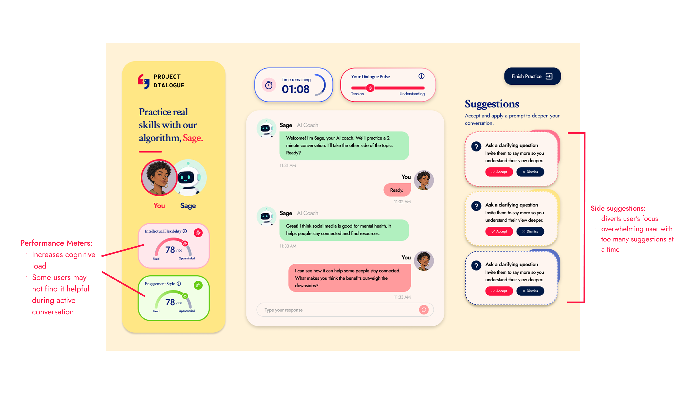
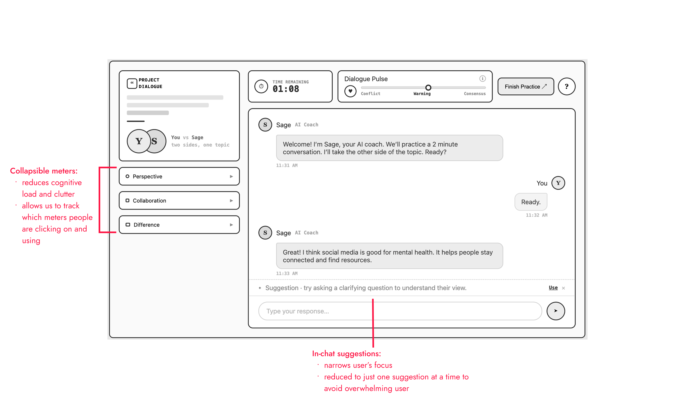
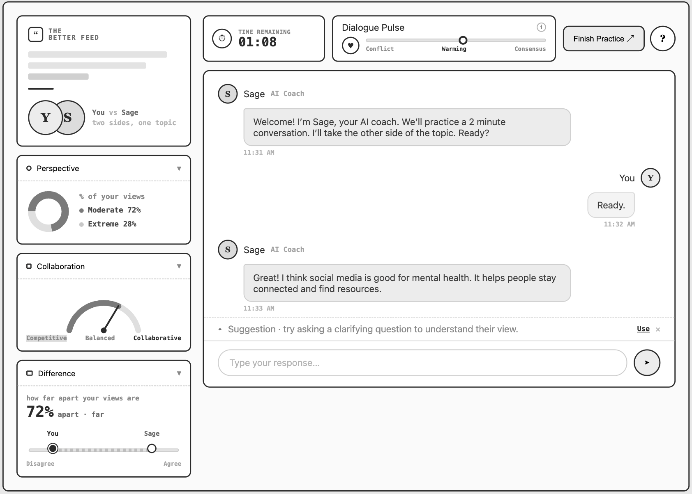
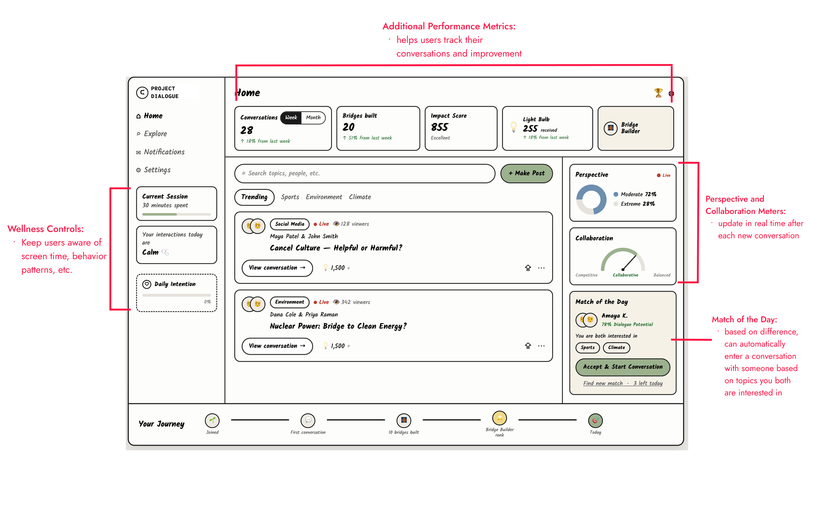

Common Strengths
- Strong content discovery
- Personalized recommendations
- Low-friction matching
- Interest-based communities
- High engagement
AI-Enabled Civic Tech Platform
Societal Problem
Social platforms optimize for engagement over understanding, leaving little room for people with different viewpoints to connect meaningfully.
Product Challenge
We need to help users understand and trust a fundamentally different interaction model, one built around constructive disagreement rather than endless engagement.
Founder
1 UI/UX Designer
3 Engineers
Lead UI/UX Designer,
Advisory Board Member
Feb 2026 – Current
Pre-Launch
Key Outcome
I replaced an explanation-heavy onboarding (educational modules, 40+ questions, required guided conversations) with a single AI practice conversation that teaches constructive dialogue through use rather than instruction.
Result: ~50% fewer onboarding steps, with users reaching the platform's core value faster.
What I Drove
Project Dialogue is an emerging civic-tech platform rethinking how digital systems shape connection in an age of polarization. As Lead Product Designer and Product Strategy Advisor, I translated a broad social-impact mission into MVP user flows, practice-first onboarding, responsible AI coaching concepts, and a visual identity for a new kind of digital public space.
Some details have been generalized or blurred for confidentiality. Process, decisions, and patterns shown reflect my actual work.
Design a 0→1 platform that makes a new kind of social interaction feel understandable, safe, and worth returning to, from MVP user journey to launch-ready high-fidelity flows.
01 Research


I analyzed social media and match-making apps to find gaps in how platforms support cross-perspective connection.
of Facebook content comes from like-minded sources
of U.S. adults have personally experienced online harassment
say political discussions online are less respectful than in-person
The competitive analysis showed that the issue was not just content moderation. The deeper problem was interaction design: existing platforms reward attention, reaction, and similarity more than thoughtful exchange. That gap is what Dialogue was built to fill.
02 Ideation
These patterns weren't just design problems. They were structural failures in how platforms are built. That became the foundation for every decision in the ideation phase.
From there, I created a user flow based on the founder's vision to align myself, the founder, and the engineers on a shared structure.

Sign up and share initial perspective
Questionnaire to personalize experience
Educational modules
3 guided conversations with other users
Enter main platform feed with matched conversations
The original onboarding addressed an important challenge: users needed to understand a new model for constructive disagreement before entering the platform. But after wireframing the flow, it became clear that the process created too much friction before users could experience the value we were asking them to trust.
How might we introduce users to a completely new conversation platform and its unique interaction model without overwhelming them with lengthy explanations?
I shortened onboarding by replacing educational modules and matched conversations with a single AI mock conversation. This gave users a low-commitment way to experience the platform’s value, practice constructive dialogue, and provide early signals about their communication style.
Practice-First Onboarding
After the onboarding process was set, my focus shifted to what the AI mock conversation screen would actually look like. The founder had a clear vision for the features she wanted to include, making sure users were aware of how they were engaging. I wanted to keep all of it, but also make sure we were designing for cognitive load.
Psychology and computer science stakeholders reviewed the design and agreed: presenting this much information in real-time, mid-conversation, was too much.
The founder pushed for an always-visible meter layout. I flagged concerns about cognitive overload mid-conversation, validated them with psychology and computer science stakeholders, and led a full redesign of the interaction model.

After expert validation confirmed the cognitive load issue, I brought in Claude Design to turn my revised sketches into wireframes directly. It cut down the number of iterations needed to land on something testable and saved significant time in Figma.


Graphs collapsed by default. Users surface them when they want the awareness.
One tip inside the message input, not three floating in the sidebar.
Once users complete onboarding, they enter the main platform. These three features work together to reinforce our core goals of safe, healthy, and meaningful conversations, helping users engage thoughtfully and stay in control.
How different is your perspective and how collaboratively are you engaging?
How long have users been on the platform and are they healthily engaging?
Connecting users with people that other algorithms would've never paired with them.

Here's the full picture: each stakeholder's need, and what I designed in response.
03 Our Solution
Our solution reimagines social media as a space for constructive connection. Instead of rewarding conflict or endless engagement, Project Dialogue uses guided conversations, thoughtful prompts, and feedback tools to help people build trust, practice dialogue, and find common ground across difference.
Bold and unforgettable, but also timeless and chic. Every typographic and color decision was made to preserve that balance.
Live feedback to practice healthy debate and active listening.
Post-conversation feedback on communication strengths and growth areas.
In-app stories, lessons, and exercises to build dialogue skills.
Suggestions can be accepted or dismissed. The AI supports your voice. It doesn't replace it.
Meters evaluate how you engage, not whether your beliefs changed. The goal is communication growth, not opinion shifting.
Pause, timeout, and feed limits let users set their own boundaries around difficult conversations.
04 Impact
Project Dialogue is pre-launch, so impact is still projected, but the research makes the opportunity clear. We're not just building another social app. We're designing against the patterns that made social media toxic in the first place.
Project Dialogue's cross-perspective matching creates exposure to views that users would never encounter in their existing feeds.
Structured conversation flows and AI moderation give users a model for engaging across disagreement without it becoming personal.
By building dialogue skills inside the app, we aim to change how people engage, both on and off the platform.
Beta metrics, anchored to our three product goals:
05 Next Steps
06 Reflection
What I learned: The hardest part of this project was not designing individual screens, it was shaping a new conversation system. I had to balance AI guidance, user autonomy, transparency, and trust.
What I contributed: I shifted onboarding from explanation to participation, replacing a high-friction flow with a single AI-guided practice conversation that let users experience the platform’s value sooner.
What I’m taking forward: This project taught me how to make product decisions with incomplete information, take ownership in ambiguity, and keep learning how to design responsibly in spaces where technology affects human connection. It also showed me how much faster iteration gets when you bring AI tools like Claude Design into the workflow early. Going from sketch to testable wireframe in a fraction of the time meant I could spend more energy on the decisions that actually mattered.
back to top ↑